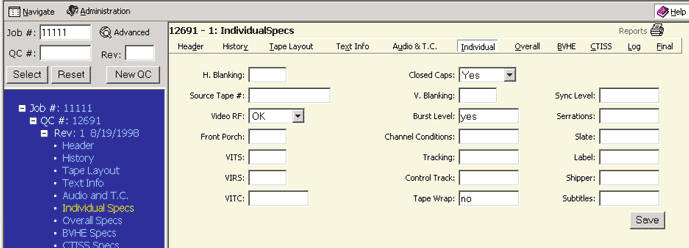

Alt + i then enter will take you to this page or clicking on INDIVIDUAL in the menu bar on the right side. You can also click on the word INDIVIDUAL SPECS in the Tree Frame (blue area).

The INDIVIDUAL SPECS page displays fields for the following information which includes:
|
|
A number of fields include pull down menus with predetermined choices. After entering the information please click the SAVE button to save your data.